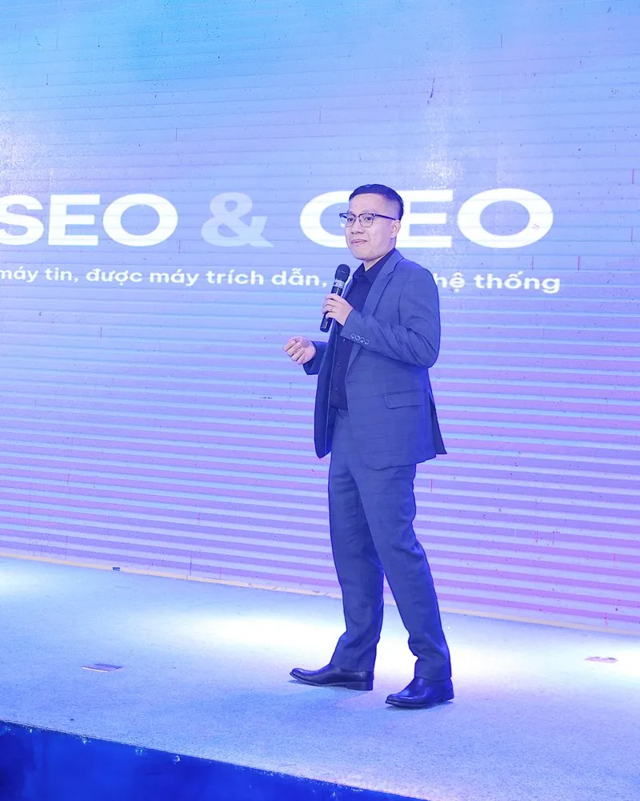
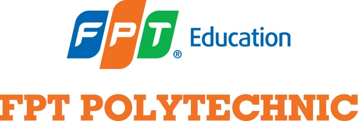
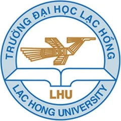
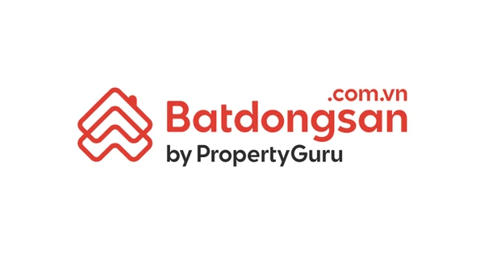
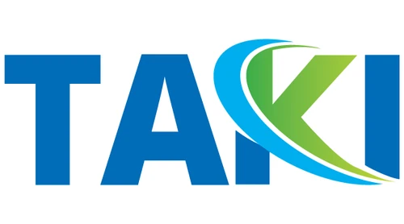
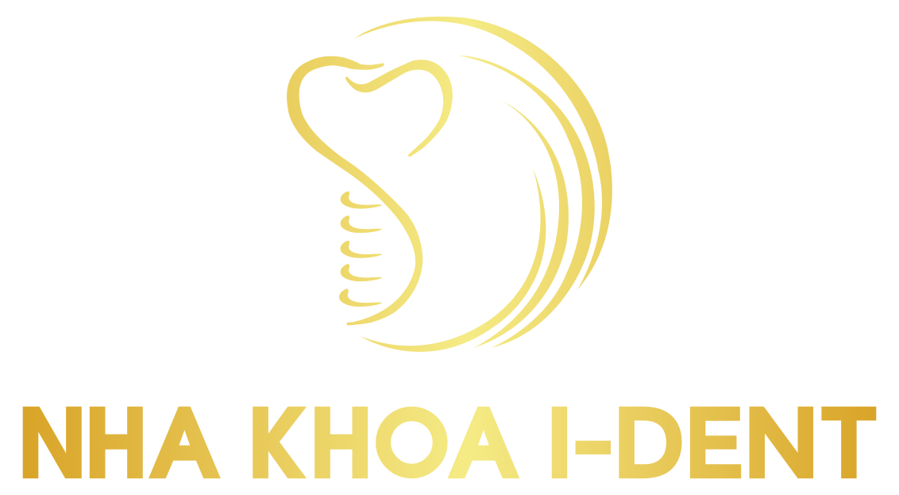
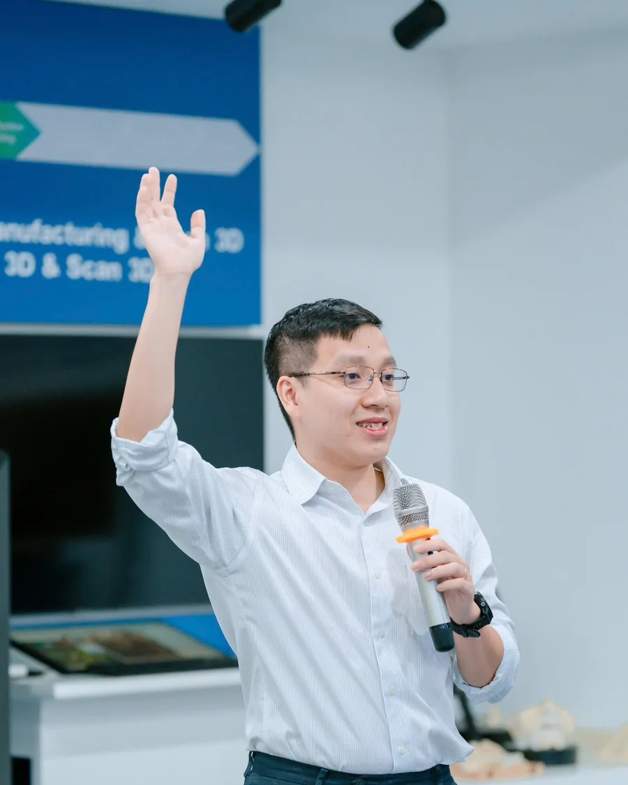

Cách xây website 100K+ organic traffic và có khách hàng từ GEO với chi phí thấp kỷ lục bằng AI Agents
Hơn 500 học viên qua 34 khoá Blueprint, 100 học viên AI Automation SEO & GEO. Hài lòng 9,23/10 (khảo sát 10 khoá).
Cho người làm SEO, đội in-house, agency và chủ doanh nghiệp đang triển khai SEO cho một hay nhiều website thật, muốn tăng trưởng mà không phải tuyển thêm người. Bạn học bản vẽ và quy trình SEO & GEO GTV SEO đang dùng cho khách hàng, rồi tích hợp AI Agents vào từng công đoạn, giảm tới 70% thời gian và chi phí so với cách làm truyền thống.
Mua cho đội 3 người: giảm 20% mỗi người- Bản vẽ và quy trình SEO & GEO đang chạy thật trên 550+ dự án
- 33 module, các case study và kết quả đo được ở từng hạng mục
- 34 AI Skills kèm câu lệnh mẫu, repo 14 trạm cho AI Agents
- Các mô hình backlink, internal link, GEO và mở rộng chuyên sâu

Vincent Do và đội GTV SEO đã đào tạo SEO & AI cho hơn 5.000 học viên, doanh nghiệp và trường đại học








Điều kiện duy nhất: bạn đang làm trên ít nhất một website thật
Website của công ty, của khách hàng hoặc của chính bạn, bạn đang trực tiếp làm hoặc chịu trách nhiệm SEO. Cả khoá dạy trên chính website đó.
Có tài khoản Claude Pro hoặc Codex. Chưa từng dùng Claude Code cũng được: phần cài đặt hướng dẫn từng bước bằng câu lệnh tiếng Việt.
- 500+học viên qua 34 khoá SEO Blueprint
- 100học viên AI Automation SEO & GEO
- 550+dự án SEO của GTV SEO, nơi quy trình được rút ra
- 34AI Skills SEO & GEO kèm câu lệnh mẫu
- 579trang trong 12 tài liệu chuyên sâu
Tên trước đây: AI Automation SEO & GEO. Học viên cũ vào học chương mới, không mua lại.
Có phải bạn hoặc đội của bạn đang gặp những vấn đề này?
Trong phiếu đăng ký các khoá Blueprint trước, nhu cầu lặp lại nhiều nhất là biết việc nào làm trước, đo bằng gì, và có một kế hoạch dùng được cho cả Google lẫn AI.
- 01
AI “ăn” mất phần lớn traffic
AI Overview “ăn” mất khoảng 50% organic traffic trung bình của website, theo số đo trên các dự án GTV SEO đang theo dõi. Người dùng cũng không chỉ tìm trên Google nữa, họ hỏi luôn ChatGPT, Claude, Gemini.
Còn bạn thì chưa biết bắt đầu từ đâu để website vẫn tăng trưởng và SEO vẫn ra hiệu quả trong thời đại AI này.
- 02
Làm đủ thứ nhưng kết quả không đổi
Bạn đã thử đủ cách: onpage, tối ưu rồi đăng lại content, SEO audit, backlink nhưng kết quả vẫn không đổi :(
Không ai chỉ ra nút thắt của dự án nằm ở đâu, chỗ nào chưa đúng, cần sửa gì để tăng trưởng. Làm hoài không thấy kết quả, bạn nản.
- 03
Website rớt top mà không biết sửa từ đâu
Website từng lên top, organic traffic rất cao những năm trước. Rồi Google update tới, website “chảy máu” dần, traffic giảm qua từng tháng.
Audit bao nhiêu lần cũng không đổi được tình trạng, vì bạn không biết lỗi nào là nguyên nhân, lỗi nào chỉ là triệu chứng.
- 04
Cả đội dùng AI, nhưng mỗi người một kiểu
Lấy kết quả ChatGPT đưa sang Claude, sang Gemini, rồi đưa lên web. Hôm nay tốt, hôm sau lệch, và không ai biết vì sao.
Chuyên môn thì nằm trong đầu một vài người giỏi nhất. Người đó bận là dự án chậm, người đó nghỉ là quy trình nghỉ theo.
Bấm “Đúng với tôi” ở những vấn đề bạn hoặc đội đang gặp để xem khoá này giải quyết được gì.
Bạn học bản vẽ SEO & GEO theo đúng thứ tự GTV SEO làm cho khách hàng, rồi đóng gói từng bước thành AI Skills và repo chạy trong máy của bạn. Kết quả là một quy trình để lên top Google và được AI đề xuất, cả đội chạy theo cùng một chuẩn.
Đăng ký họcMột lệnh của bạn, một quy trình có bước duyệt phía sau
Cách ứng dụng AI hiệu quả nhất cho SEO hiện tại là AI Skills: mỗi skill là một kỹ năng đã được đóng gói, có quy trình, tiêu chuẩn và mẫu đầu ra. Bạn giao việc bằng một câu lệnh, agent chọn đúng skill, đọc bối cảnh website, lưu kết quả vào đúng trạm và dừng ở chỗ cần bạn duyệt. Chọn một việc bên dưới để xem cách nó chạy.
topical-map-creation, keyword-topic-url-mapping lưu vào du-an/02-topical-map/
Bạn duyệt phần lõi và phần mở rộng trước khi lên kế hoạch nội dung.
Topical Map và bản đồ Keyword, Topic, URL cho nhóm dịch vụ đó.
technical-seo-audit, seo-drift-tracker lưu vào du-an/03-technical-audit/
Agent báo từng dòng đạt, chưa đạt, chưa kiểm chứng; bạn chọn lỗi sửa trước.
Danh sách lỗi theo mức ưu tiên và mốc so sánh để đo lại sau khi sửa.
geo-audit, geo-tracking-prompt-selection lưu vào du-an/10-geo/
Bạn duyệt bộ prompt theo dõi trước khi chạy đo.
Bảng chấm 32 việc, bộ prompt và baseline tháng đầu cho thương hiệu của bạn.
programmatic-seo-builder lưu vào du-an/07-content-plan/
Cửa chặn có nên làm không với 3 tiêu chí; trượt một là dừng.
Template spec và kế hoạch chạy thử 20 đến 50 trang có kiểm soát chỉ mục.
cro-audit lưu vào du-an/11-cro/
Chưa có tracking chuyển đổi thì agent dừng lại và yêu cầu đo trước.
Danh sách lỗi P0, P1, P2 và brief sửa giao cho dev.
Skill là file của bạn
Bạn đọc được, sửa được và thêm tiêu chuẩn riêng của đội vào skill. Không phụ thuộc tài khoản hay MCP của người dạy.
Mỗi trạm có tiến độ và nhật ký
Người mới vào đội đọc tiến độ là biết dự án đang ở đâu, đang tắc ở hạng mục nào và việc kế tiếp là gì.
Năm lệnh chuẩn
Bắt đầu, làm, kiểm, tiếp theo là gì và ghi chú. Bạn không cần nhớ tên skill.
Sau khoá, bạn có bản vẽ SEO & GEO và một hệ để chạy nó
Kết thúc khoá, bạn không chỉ cầm về một tập video. Mỗi phần cho bạn mindset SEO & GEO bền vững: Google và AI Search vận hành ra sao, tối ưu thế nào. Rồi nó thành một phần của bản vẽ, làm ngay trên website của bạn. Mọi thứ dưới đây là file và thư mục trong máy của bạn, dùng lại được cho website tiếp theo và cho người mới vào đội.
Bản vẽ cho chính website của bạn, theo thứ tự GTV SEO đang làm
Chiến lược, kế hoạch, topical map, cấu trúc website, entity và onpage, internal link, offsite, technical, GEO và KPI. Mỗi hạng mục có case study thật và một trạm trong repo, nên bạn luôn biết dự án đang ở đâu:
34 AI Skills cho từng bước, chạy trong Claude Code hoặc Codex
Mỗi skill là một bước đã được đóng gói: quy trình, bảng tiêu chí, mẫu đầu ra và prompt mẫu. Research, topical map, onpage, internal link, audit, backlink, GEO, programmatic, hreflang, CRO.
Repo 14 trạm để AI Agents chạy quy trình cho cả đội
Nắm vững bản vẽ rồi, bạn giao việc bằng một câu lệnh: agent chọn skill, lưu vào đúng trạm, ghi nhật ký và dừng ở chỗ cần người duyệt. Người mới vào đội đọc tiến độ là biết làm tiếp. Từ đây dự án được liền mạch, dễ dàng chuyển giao và giữ chất lượng xuyên suốt.
Group học viên, livestream và 18 tháng cập nhật
Kẹt ở đâu thì hỏi trong group học viên; livestream định kỳ để chữa điểm nghẽn. Skill và tài liệu cập nhật 18 tháng, video xem trọn đời; sau đó gia hạn 1.997.000đ mỗi năm nếu muốn nhận bản mới.
5 phần, 33 module, mỗi phần một đầu ra cho website của bạn
Khoá đi theo hai chặng. Phần 1 đến 4 là bản vẽ triển khai & tích hợp AI: làm đúng SEO & GEO theo thứ tự một dự án được làm tại GTV SEO, từ chiến lược, kiến trúc semantic, technical, backlink đến GEO và các skills AI có thể giúp bạn triển khai song song. Phần 5 là tăng tốc vận hành (AI nâng cao): đưa quy trình đó vào AI Agents để chạy đều trên nhiều website và cho cả đội.
Mỗi phần giải thích bản chất và tiêu chuẩn khi làm thủ công trước, rồi mới giao cho skill chạy, vì khi hiểu chuẩn bạn mới nhận ra AI đang sai ở đâu.
Để xem cụ thể, hãy bấm tên module để xem mô tả và kết quả học viên đã đạt ở hạng mục đó; hoặc mở tab danh sách đầy đủ để xem hết một lượt.
- 1Bức tranh, chiến lược, đo lườngLộ trình 90 ngày, KPI
- 2Bản vẽ semanticTopical Map, cấu trúc site
- 3Technical, backlink, mở rộngAudit, lộ trình phục hồi
- 4GEO và Visual SemanticChecklist GEO đã chấm
- 5Vận hành bằng AI AgentsRepo đã cài, chạy được
Chi tiết từng phần
Tự học theo nhịp của bạnVideo case studyLivestream định kỳGroup học viên
PHẦN 17 moduleBức tranh SEO & GEO, chiến lược và đo lường
Câu hỏi mở đầu: vì sao đội bạn làm đúng hết checklist mà sếp vẫn hỏi SEO đang đi tới đâu?
Phần này cho bạn bức tranh tổng thể của SEO & GEO trong thời đại AI: Google và AI Search đọc website ra sao, thị trường của bạn nên ưu tiên gì, nên chọn con đường nào và cần chuẩn bị mindset gì. Rồi bạn dựng quy trình SEO & GEO 10 tháng, lộ trình 90 ngày, KPI thay cho lời hứa thứ hạng, và mẫu báo cáo bằng AI: KPI tới đâu, trang nào tăng, trang nào rớt, việc gì làm tiếp.
1Mindset AI & Automation cho SEO và bản đồ công cụ 2026
Khác biệt lớn nhất giữa người làm được và người loay hoay trong thời AI không nằm ở công cụ hay ngân sách, mà ở mindset. “AI first” không có nghĩa là “AI only”: tự động hoá đúng chỗ, phần chiến lược và phần chỉ con người làm được thì giữ lại. Kèm bản đồ chatbot, API, skill, agent, n8n: việc nào dùng thứ gì.
2Mindset SEO & Content thời AI và quy trình SEO 10 tháng, 33 công đoạn
Bạn có một hệ thống hoàn chỉnh thay vì mẹo lẻ: quy trình 10 tháng GTV SEO đang dùng cho khách hàng, chia 33 công đoạn với việc làm trước, việc làm sau, và lộ trình 90 ngày cho website của bạn.
3Google và AI Search 2026 đọc website thế nào: crawl, index, xếp hạng, chi phí truy xuất, Topical Authority, Source Context
Theo Search Engine Journal, tới 90% người làm SEO hiểu sai cách Google hoạt động. Bạn xem tận mắt Google crawl, index và xếp hạng ra sao sau các bản cập nhật, vì sao Topical Authority và E-E-A-T quyết định thứ hạng, và AI Search chọn nguồn để trích như thế nào.
4Năm tiêu chí Google chấp nhận nội dung có dùng AI
Checklist năm tiêu chí để nội dung có AI tham gia vẫn được Google xếp hạng, và cách nhận ra bài nào đang “xả rác” lên Internet.
5KPI theo quý, báo cáo bằng AI và cách trình bày cho người quyết định
Mục tiêu thay cho lời hứa thứ hạng: bảng KPI theo quý, conversion Global so với Việt Nam, mẫu báo cáo tháng do AI dựng (KPI tới đâu, trang nào tăng, trang nào rớt, việc gì làm tiếp) và khung trình bày một trang cho sếp hoặc khách hàng.
6Từ traffic đến khách hàng: CRO cho website SEO
Traffic chỉ có nghĩa khi ra khách. Tối ưu trang đích, conversion path và các yếu tố toàn trang để tăng tỷ lệ mua hàng, đăng ký, để lại lead; kèm tài liệu CRO và skill cro-audit chấm lỗi theo mức P0, P1, P2.
7Trình bày SEO & GEO cho chủ doanh nghiệp và khách hàng
Nói gì khi khách hỏi GEO, đặt mục tiêu thay cho lời hứa, và vật thể giao hàng tuần để đội hoặc agency báo cáo được. Có khung một trang và bảng KPI Google, AI.
PHẦN 28 moduleBản vẽ semantic: keyword, topical map, cấu trúc, onpage
Câu hỏi mở đầu: vì sao một website mới, gần như không có backlink, vẫn đứng trên những tên tuổi lớn?
Keyword research toàn tập theo bốn phương pháp. Cách lập Topical Map và content strategy với phần lõi và phần mở rộng. Dàn ý chuẩn semantic và tiêu chuẩn nội dung. Entity, source context, cấu trúc website, silo, UX/UI. Onpage semantic và semantic internal link. Mỗi hạng mục có case study, checklist, skill và prompt mẫu để làm trên website của bạn.
8Keyword research với AI: keyword, topic, modifier và bốn phương pháp
Quên cách nghiên cứu từ khoá mất cả tuần. Với bốn phương pháp và skill research, bạn có toàn bộ từ khoá trong ngách, nhóm theo ý định tìm kiếm, kèm từ khoá ngữ nghĩa để SEO, chỉ trong vài giờ.
9Lên kế hoạch content và keyword: Topical Map năm bước, kèm bốn case studyNâng cao
Chương mạnh nhất của khoá. Bạn dựng Topical Map cho website của mình theo năm bước, phần lõi và phần mở rộng, thứ tự xuất bản, rồi đối chiếu với bốn case study đã chạy và audit Topical Authority bằng AI.
10Content chuẩn SEO và search intent: main, supplemental, dàn ý AM
83% content đứng top 1 Google đáp ứng đúng ý định tìm kiếm của người dùng. Bạn học khung search intent, dàn ý AM, main và supplemental content, bốn loại câu hỏi và checklist một bài; phần viết bài hàng loạt bằng AI thuộc khoá Agentic Content SEO.
11Semantic Web, Entity và AI Search Engine
Trong hơn 14.000 tín hiệu xếp hạng rò rỉ từ Google có 1.278 bằng sáng chế về link nhưng tới 13.057 về semantic. Bạn hiểu entity, thuộc tính thực thể, Semantic Web và cách AI Search Engine đọc nội dung, để làm chủ cả Google lẫn ChatGPT, Gemini, Perplexity.
12Semantic Content từ A đến Z: contextual flow, contextual bridge, Information GainNâng cao
Bí mật không nằm ở số lượng content hay backlink, mà ở semantic content: nội dung Google và AI đọc hiểu được bằng ngôn ngữ NLP. Contextual vectors, hierarchy, bridge, flow, query parsing và Information Gain cho từng bài.
13Cấu trúc website, silo, UX/UI với AI: lên top với ít backlink
Làm sao lên top hàng loạt từ khoá mà số backlink không quá một bàn tay? Câu trả lời nằm ở cấu trúc website. Bạn dựng cấu trúc theo modifier, silo, URL và breadcrumb, checklist UX/UI, với case ecommerce, dịch vụ và blog.
14Onpage semantic và semantic internal link với AI & Automation
Quy trình onpage và internal link 3T đội GTV SEO đang dùng, có skill chạy: phân tích trang đang xếp hạng, gợi ý ngữ nghĩa, chấm điểm, lập kế hoạch internal link cho cả cụm. Tiết kiệm hơn 50% thời gian onpage.
15Case study chi tiết theo ngành: từ Topical Map đến trafficCase study
Video case đủ vòng: bối cảnh và mục tiêu, quyết định kiến trúc, map hoặc plan, số trước và sau có nguồn đo, lỗi đã gặp. Sản xuất B2B, nền tảng dịch vụ, ecommerce, global đa thị trường và GEO. Tên dự án đã ẩn theo thoả thuận với khách.
PHẦN 37 moduleTechnical, backlink và mở rộng
Câu hỏi mở đầu: vì sao trang rớt sau core update mà không ai trong đội biết bắt đầu sửa từ đâu?
SEO Audit với hơn 215 mục kiểm, audit semantic content bằng AI và quy trình phục hồi theo mức rớt. Backlink và offsite cho cả SEO lẫn GEO: chiến lược, textlink, kế hoạch 3 tháng có cổng quyết định, và mô hình DAS, TAS cho website mới hay từ khoá độ khó cao. Rồi mới đến International SEO, hreflang và Programmatic SEO có cửa chặn.
16SEO Audit từ A đến Z với AI & Automation: hơn 215 mục kiểm
93% website mắc ít nhất 3 lỗi SEO nghiêm trọng mà không biết. Bạn audit toàn diện technical, content, onpage, entity với hơn 215 mục kiểm, Screaming Frog và skill technical-seo-audit; agent chấm từng dòng đạt, chưa đạt, chưa kiểm chứng và xếp lỗi sửa trước.
17Audit semantic content bằng AI
Audit 10 bài theo tiêu chuẩn semantic, ra danh sách hành động: bài nào viết lại, bài nào gộp, bài nào bỏ. Có Claude Project setup và skill semantic-content-audit.
18Website đã có kết quả hoặc bị phạt: quy trình phục hồi theo mức rớt
Website từng lên top rồi “chảy máu” sau core update. Bạn tách nguyên nhân khỏi triệu chứng, chọn lộ trình phục hồi theo mức rớt, và biết khi nào không nên làm thêm gì.
19Link building strategy, textlink và kế hoạch backlink 3 tháng
90% dự án GTV SEO lên top nhờ các module trước; backlink là gia tốc khi cần nhanh hơn hoặc từ khoá có độ khó từ 50 trở lên. Ít về số lượng, cao về chất lượng: PageRank và TrustRank, khung T.T.T, textlink, kế hoạch 3 tháng có cổng quyết định và tracker.
20Mô hình backlink cho website mới và từ khoá độ khó cao: DAS, TAS và tầng T2
Năm 2026 Google siết website mới và content AI hàng loạt, nên site chưa có trust lên chậm hơn nhiều. Bạn học Domain Authority Stacking, Traffic Authority Stacking (DAS 2.0) với tầng T2, mô hình trỏ nhiều URL để tăng TrustRank và mô hình dồn một URL để tăng PageRank, kèm luật thiết kế, lịch kiểm và điểm dừng.
21International SEO và đa ngôn ngữ: cấu trúc tên miền, hreflang
Cùng một khách hàng mục tiêu, thị trường Mỹ, Anh, Úc sẵn sàng trả gấp 3 đến 5 lần. Bốn nguyên tắc, 17 quy tắc, sơ đồ ngôn ngữ, bộ hreflang mẫu và cách dùng AI dịch có kiểm soát.
22Programmatic SEO: cửa chặn, template theo thực thể, chạy thử có kiểm soát chỉ mục
Hàng nghìn trang từ một cấu trúc dữ liệu và template chuẩn SEO, không cần code. Có cửa chặn ba tiêu chí trước khi làm, chạy thử 10 trang, kiểm soát index để không đầy trang rác. Dành cho người đã xong phần bản vẽ.
PHẦN 45 moduleGEO và Visual Semantic
Câu hỏi mở đầu: vì sao bài đứng trang một Google mà ChatGPT vẫn không nhắc tới bạn?
GEO trong quy trình SEO: 6 điểm chạm, checklist 32 việc. Đo hiện diện trên AI bằng bộ prompt và baseline. AI nói gì về thương hiệu của bạn. Semantic HTML và Visual Semantic. Kiểm tra bot AI truy cập và đọc trang.
23GEO: tối ưu cho AI Search Engine trong quy trình SEO, 6 điểm chạm, checklist 32 việc
Chỉ tối ưu cho Google là bỏ lỡ một nửa cơ hội. Bạn hiểu AI Search Engine vận hành thế nào, chỉnh nội dung để trang được AI chọn làm nguồn khi người dùng hỏi ChatGPT, Gemini, Perplexity hay AI Overview, theo 6 điểm chạm G0 đến G5 và checklist 32 việc chấm được cho website của bạn.
24Đo hiện diện trên AI: bộ prompt theo dõi, baseline, share of voice
Bộ 28 đến 40 prompt theo ngách, chạy lặp trên nhiều AI, ghi baseline tháng đầu và đo lại hằng tháng để biết thương hiệu đã được nhắc tên hay chưa.
25Semantic HTML và Visual Semantic: audit trực tiếp trên trang thật
Chương chưa nơi nào ở Việt Nam dạy: thẻ HTML và bố cục thị giác nói với máy đâu là phần chính, đâu là phần phụ. Định nghĩa, thẻ, lỗi thường gặp, audit một loại trang và sửa bằng Claude Code.
26AI nói gì về thương hiệu của bạn: audit nhận thức và kế hoạch hội tụ
Bảng audit 7 thuộc tính thương hiệu trên 4 AI, chỗ nào các AI nói lệch nhau, và kế hoạch để chúng hội tụ về đúng thông tin bạn muốn.
27Kiểm tra bot AI truy cập và đọc trang bằng công cụ sẵn có
Robots, log, JavaScript, HTML thô: bot của từng AI có vào được và đọc được trang không? Báo cáo một trang cho website của bạn, không cần dựng tool.
PHẦN 56 moduleVận hành SEO & GEO bằng AI Agents
Câu hỏi mở đầu: vì sao có AI mà đội bạn vẫn làm SEO bằng tay, và người giỏi nhất vẫn là nút thắt?
Khi đã nắm vững bản vẽ, bạn đưa cả quy trình vào AI Agents. Claude Skills và Claude Code cho SEO. Repo SEO & GEO 14 trạm với tiến độ, nhật ký và lệnh kiểm. MCP nối dữ liệu GSC, GA4. Khi nào dùng n8n. Cập nhật theo kỳ và cách merge khi có bản mới.
28Claude Skills: cài, chạy, đọc đầu ra
Bước đầu tiên tới sự “ảo diệu” của AI: cài bộ skill vào Claude Code hoặc Codex, chạy một skill trên website của bạn và đọc đầu ra theo bảng tiêu chí.
29Claude Code cho SEO: dựng trang chuẩn semantic, giảm tới 70% chi phí và thời gian
Hai demo thật: audit Visual Semantic và dựng lại một loại trang bằng Claude Code. Bạn thấy chỗ nào AI làm, chỗ nào cần người duyệt.
30Repo SEO & GEO bản học viên: 14 trạm, tiến độ, nhật ký, năm lệnh chuẩn
Tour repo và chạy một công đoạn từ đầu đến cuối. Gõ “bắt đầu”, agent chọn skill, lưu đúng trạm, ghi nhật ký và dừng ở chỗ cần bạn duyệt. Người mới vào đội đọc tiến độ là biết làm tiếp.
31MCP: nối dữ liệu GSC, GA4 vào quy trình
Tự setup MCP để agent đọc thẳng dữ liệu Search Console và Analytics thay vì bạn export tay mỗi tháng.
32Khi nào dùng n8n hoặc Make
Bản đồ việc nào giao cho agent, việc nào chạy theo lịch bằng n8n hay Make, và khi nào không nên tự động hoá.
33Cập nhật theo kỳ: livestream, ghi chú thay đổi, cách merge
Công cụ AI đổi vài tháng một lần. Livestream định kỳ, ghi chú thay đổi cho từng bản skill và cách merge bản mới vào repo của bạn mà không mất dữ liệu.
Toàn bộ 33 module theo thứ tự học, kèm mô tả từng module. Module có ảnh là kết quả học viên hoặc dự án đã đạt ở hạng mục đó; bấm ảnh để phóng to.
PHẦN 1Bức tranh SEO & GEO, chiến lược và đo lường7 module
- Module 1
Mindset AI & Automation cho SEO và bản đồ công cụ 2026
Khác biệt lớn nhất giữa người làm được và người loay hoay trong thời AI không nằm ở công cụ hay ngân sách, mà ở mindset. “AI first” không có nghĩa là “AI only”: tự động hoá đúng chỗ, phần chiến lược và phần chỉ con người làm được thì giữ lại. Kèm bản đồ chatbot, API, skill, agent, n8n: việc nào dùng thứ gì.
- Module 2
Mindset SEO & Content thời AI và quy trình SEO 10 tháng, 33 công đoạn
Bạn có một hệ thống hoàn chỉnh thay vì mẹo lẻ: quy trình 10 tháng GTV SEO đang dùng cho khách hàng, chia 33 công đoạn với việc làm trước, việc làm sau, và lộ trình 90 ngày cho website của bạn.
- Module 3
Google và AI Search 2026 đọc website thế nào: crawl, index, xếp hạng, chi phí truy xuất, Topical Authority, Source Context
Theo Search Engine Journal, tới 90% người làm SEO hiểu sai cách Google hoạt động. Bạn xem tận mắt Google crawl, index và xếp hạng ra sao sau các bản cập nhật, vì sao Topical Authority và E-E-A-T quyết định thứ hạng, và AI Search chọn nguồn để trích như thế nào.
Kết quả đã đạtAnh Thái: hơn 3 tháng lên top từ khoá 1,3 triệu lượt tìm - Module 4
Năm tiêu chí Google chấp nhận nội dung có dùng AI
Checklist năm tiêu chí để nội dung có AI tham gia vẫn được Google xếp hạng, và cách nhận ra bài nào đang “xả rác” lên Internet.
- Module 5
KPI theo quý, báo cáo bằng AI và cách trình bày cho người quyết định
Mục tiêu thay cho lời hứa thứ hạng: bảng KPI theo quý, conversion Global so với Việt Nam, mẫu báo cáo tháng do AI dựng (KPI tới đâu, trang nào tăng, trang nào rớt, việc gì làm tiếp) và khung trình bày một trang cho sếp hoặc khách hàng.
- Module 6
Từ traffic đến khách hàng: CRO cho website SEO
Traffic chỉ có nghĩa khi ra khách. Tối ưu trang đích, conversion path và các yếu tố toàn trang để tăng tỷ lệ mua hàng, đăng ký, để lại lead; kèm tài liệu CRO và skill cro-audit chấm lỗi theo mức P0, P1, P2.
- Module 7
Trình bày SEO & GEO cho chủ doanh nghiệp và khách hàng
Nói gì khi khách hỏi GEO, đặt mục tiêu thay cho lời hứa, và vật thể giao hàng tuần để đội hoặc agency báo cáo được. Có khung một trang và bảng KPI Google, AI.
PHẦN 2Bản vẽ semantic: keyword, topical map, cấu trúc, onpage8 module
- Module 8
Keyword research với AI: keyword, topic, modifier và bốn phương pháp
Quên cách nghiên cứu từ khoá mất cả tuần. Với bốn phương pháp và skill research, bạn có toàn bộ từ khoá trong ngách, nhóm theo ý định tìm kiếm, kèm từ khoá ngữ nghĩa để SEO, chỉ trong vài giờ.
Kết quả đã đạtDropship thú cưng thị trường Mỹ, Anh: 9.322$ một tuần từ SEO - Module 9Nâng cao
Lên kế hoạch content và keyword: Topical Map năm bước, kèm bốn case study
Chương mạnh nhất của khoá. Bạn dựng Topical Map cho website của mình theo năm bước, phần lõi và phần mở rộng, thứ tự xuất bản, rồi đối chiếu với bốn case study đã chạy và audit Topical Authority bằng AI.
Kết quả đã đạtDự án global của học viên: 100.000 traffic sau 5 tháng - Module 10
Content chuẩn SEO và search intent: main, supplemental, dàn ý AM
83% content đứng top 1 Google đáp ứng đúng ý định tìm kiếm của người dùng. Bạn học khung search intent, dàn ý AM, main và supplemental content, bốn loại câu hỏi và checklist một bài; phần viết bài hàng loạt bằng AI thuộc khoá Agentic Content SEO.
Kết quả đã đạtLê Xuân Hòa: top 1 Google sau 5 ngày áp dụng - Module 11
Semantic Web, Entity và AI Search Engine
Trong hơn 14.000 tín hiệu xếp hạng rò rỉ từ Google có 1.278 bằng sáng chế về link nhưng tới 13.057 về semantic. Bạn hiểu entity, thuộc tính thực thể, Semantic Web và cách AI Search Engine đọc nội dung, để làm chủ cả Google lẫn ChatGPT, Gemini, Perplexity.
Kết quả đã đạtChị Tân, K21: 9.338 traffic và 3.706 từ khoá tự nhiên - Module 12Nâng cao
Semantic Content từ A đến Z: contextual flow, contextual bridge, Information Gain
Bí mật không nằm ở số lượng content hay backlink, mà ở semantic content: nội dung Google và AI đọc hiểu được bằng ngôn ngữ NLP. Contextual vectors, hierarchy, bridge, flow, query parsing và Information Gain cho từng bài.
- Module 13
Cấu trúc website, silo, UX/UI với AI: lên top với ít backlink
Làm sao lên top hàng loạt từ khoá mà số backlink không quá một bàn tay? Câu trả lời nằm ở cấu trúc website. Bạn dựng cấu trúc theo modifier, silo, URL và breadcrumb, checklist UX/UI, với case ecommerce, dịch vụ và blog.
Kết quả đã đạtĐỗ Hải Vương: 8.000 lên 10.000 traffic, không mua backlink - Module 14
Onpage semantic và semantic internal link với AI & Automation
Quy trình onpage và internal link 3T đội GTV SEO đang dùng, có skill chạy: phân tích trang đang xếp hạng, gợi ý ngữ nghĩa, chấm điểm, lập kế hoạch internal link cho cả cụm. Tiết kiệm hơn 50% thời gian onpage.
Kết quả đã đạtNguyễn Trung Thành, Blueprint 13: bài từ top 10 lên top 2 - Module 15Case study
Case study chi tiết theo ngành: từ Topical Map đến traffic
Video case đủ vòng: bối cảnh và mục tiêu, quyết định kiến trúc, map hoặc plan, số trước và sau có nguồn đo, lỗi đã gặp. Sản xuất B2B, nền tảng dịch vụ, ecommerce, global đa thị trường và GEO. Tên dự án đã ẩn theo thoả thuận với khách.
PHẦN 3Technical, backlink và mở rộng7 module
- Module 16
SEO Audit từ A đến Z với AI & Automation: hơn 215 mục kiểm
93% website mắc ít nhất 3 lỗi SEO nghiêm trọng mà không biết. Bạn audit toàn diện technical, content, onpage, entity với hơn 215 mục kiểm, Screaming Frog và skill technical-seo-audit; agent chấm từng dòng đạt, chưa đạt, chưa kiểm chứng và xếp lỗi sửa trước.
Kết quả đã đạtLuật Thành Đô: sửa theo audit trong tối, hôm sau lên top 3 - Module 17
Audit semantic content bằng AI
Audit 10 bài theo tiêu chuẩn semantic, ra danh sách hành động: bài nào viết lại, bài nào gộp, bài nào bỏ. Có Claude Project setup và skill semantic-content-audit.
- Module 18
Website đã có kết quả hoặc bị phạt: quy trình phục hồi theo mức rớt
Website từng lên top rồi “chảy máu” sau core update. Bạn tách nguyên nhân khỏi triệu chứng, chọn lộ trình phục hồi theo mức rớt, và biết khi nào không nên làm thêm gì.
- Module 19
Link building strategy, textlink và kế hoạch backlink 3 tháng
90% dự án GTV SEO lên top nhờ các module trước; backlink là gia tốc khi cần nhanh hơn hoặc từ khoá có độ khó từ 50 trở lên. Ít về số lượng, cao về chất lượng: PageRank và TrustRank, khung T.T.T, textlink, kế hoạch 3 tháng có cổng quyết định và tracker.
Kết quả đã đạtNguyen Sơn, K21: vượt bão update, chưa đi backlink nào - Module 20
Mô hình backlink cho website mới và từ khoá độ khó cao: DAS, TAS và tầng T2
Năm 2026 Google siết website mới và content AI hàng loạt, nên site chưa có trust lên chậm hơn nhiều. Bạn học Domain Authority Stacking, Traffic Authority Stacking (DAS 2.0) với tầng T2, mô hình trỏ nhiều URL để tăng TrustRank và mô hình dồn một URL để tăng PageRank, kèm luật thiết kế, lịch kiểm và điểm dừng.
- Module 21
International SEO và đa ngôn ngữ: cấu trúc tên miền, hreflang
Cùng một khách hàng mục tiêu, thị trường Mỹ, Anh, Úc sẵn sàng trả gấp 3 đến 5 lần. Bốn nguyên tắc, 17 quy tắc, sơ đồ ngôn ngữ, bộ hreflang mẫu và cách dùng AI dịch có kiểm soát.
Kết quả đã đạtSầm Minh Tuấn: website 1 triệu traffic thị trường Mỹ - Module 22
Programmatic SEO: cửa chặn, template theo thực thể, chạy thử có kiểm soát chỉ mục
Hàng nghìn trang từ một cấu trúc dữ liệu và template chuẩn SEO, không cần code. Có cửa chặn ba tiêu chí trước khi làm, chạy thử 10 trang, kiểm soát index để không đầy trang rác. Dành cho người đã xong phần bản vẽ.
Kết quả đã đạtProgrammatic: vị trí trung bình từ 16 lên 10 trong 1 tháng
PHẦN 4GEO và Visual Semantic5 module
- Module 23
GEO: tối ưu cho AI Search Engine trong quy trình SEO, 6 điểm chạm, checklist 32 việc
Chỉ tối ưu cho Google là bỏ lỡ một nửa cơ hội. Bạn hiểu AI Search Engine vận hành thế nào, chỉnh nội dung để trang được AI chọn làm nguồn khi người dùng hỏi ChatGPT, Gemini, Perplexity hay AI Overview, theo 6 điểm chạm G0 đến G5 và checklist 32 việc chấm được cho website của bạn.
- Module 24
Đo hiện diện trên AI: bộ prompt theo dõi, baseline, share of voice
Bộ 28 đến 40 prompt theo ngách, chạy lặp trên nhiều AI, ghi baseline tháng đầu và đo lại hằng tháng để biết thương hiệu đã được nhắc tên hay chưa.
- Module 25
Semantic HTML và Visual Semantic: audit trực tiếp trên trang thật
Chương chưa nơi nào ở Việt Nam dạy: thẻ HTML và bố cục thị giác nói với máy đâu là phần chính, đâu là phần phụ. Định nghĩa, thẻ, lỗi thường gặp, audit một loại trang và sửa bằng Claude Code.
- Module 26
AI nói gì về thương hiệu của bạn: audit nhận thức và kế hoạch hội tụ
Bảng audit 7 thuộc tính thương hiệu trên 4 AI, chỗ nào các AI nói lệch nhau, và kế hoạch để chúng hội tụ về đúng thông tin bạn muốn.
- Module 27
Kiểm tra bot AI truy cập và đọc trang bằng công cụ sẵn có
Robots, log, JavaScript, HTML thô: bot của từng AI có vào được và đọc được trang không? Báo cáo một trang cho website của bạn, không cần dựng tool.
PHẦN 5Vận hành SEO & GEO bằng AI Agents6 module
- Module 28
Claude Skills: cài, chạy, đọc đầu ra
Bước đầu tiên tới sự “ảo diệu” của AI: cài bộ skill vào Claude Code hoặc Codex, chạy một skill trên website của bạn và đọc đầu ra theo bảng tiêu chí.
- Module 29
Claude Code cho SEO: dựng trang chuẩn semantic, giảm tới 70% chi phí và thời gian
Hai demo thật: audit Visual Semantic và dựng lại một loại trang bằng Claude Code. Bạn thấy chỗ nào AI làm, chỗ nào cần người duyệt.
- Module 30
Repo SEO & GEO bản học viên: 14 trạm, tiến độ, nhật ký, năm lệnh chuẩn
Tour repo và chạy một công đoạn từ đầu đến cuối. Gõ “bắt đầu”, agent chọn skill, lưu đúng trạm, ghi nhật ký và dừng ở chỗ cần bạn duyệt. Người mới vào đội đọc tiến độ là biết làm tiếp.
- Module 31
MCP: nối dữ liệu GSC, GA4 vào quy trình
Tự setup MCP để agent đọc thẳng dữ liệu Search Console và Analytics thay vì bạn export tay mỗi tháng.
- Module 32
Khi nào dùng n8n hoặc Make
Bản đồ việc nào giao cho agent, việc nào chạy theo lịch bằng n8n hay Make, và khi nào không nên tự động hoá.
- Module 33
Cập nhật theo kỳ: livestream, ghi chú thay đổi, cách merge
Công cụ AI đổi vài tháng một lần. Livestream định kỳ, ghi chú thay đổi cho từng bản skill và cách merge bản mới vào repo của bạn mà không mất dữ liệu.
Khoá không có module Email Marketing và Social traffic như bản AI Automation SEO & GEO trước; phần đó thay bằng CRO, mô hình backlink cho website mới và toàn bộ phần GEO, Visual Semantic, AI Agents. Học viên cũ vào học các module mới không mất thêm phí trong thời hạn cập nhật.
Bộ AI Skills đang chạy thật, kèm câu lệnh mẫu cho từng bước
AI có thể làm rất nhanh một việc sai. Topical map lệch intent, audit ra nghìn dòng không biết sửa gì trước, nội dung không đạt chuẩn thì làm nhanh cũng chỉ là “xả rác” lên Internet, tệ hơn là bị Google phạt.
Ở mỗi phần, ngoài bộ skill do đội GTV SEO xây và tinh chỉnh qua hàng trăm dự án, bạn còn học bản chất, checklist, tiêu chuẩn kiểm đầu ra và câu lệnh mẫu để áp dụng ngay. Bạn không phải tự mày mò prompt, và biết rõ chỗ nào AI làm, chỗ nào cần con người review.
Phần 1 · Bức tranh SEO & GEO, chiến lược và đo lường
4 skillCông đoạn: trước khi hứa bất kỳ con số nào với sếp
Kế hoạch traffic theo kịch bản, phân tích khoảng trống với đối thủ, theo dõi trôi lệch SEO và báo cáo nội bộ có mẫu.
Câu lệnh mẫu- “Đọc dữ liệu tháng này, dựng báo cáo nội bộ và ba việc cần ưu tiên; đối chiếu tracker trước khi quy công.”
- “Nạp export GSC tháng 8 và tháng 7, so kỳ 01 đến 31/08 với 01 đến 31/07 cho site example.com.”
- “Báo cáo quý 3 so quý 2: chỉ so phần có dữ liệu tương đương, giữ lớp tháng.”
Bạn có lịch 10 tháng, bảng KPI và bản trình bày một trang cho website của mình, kèm cách đo để biết khi nào phải đổi kế hoạch.
Phần 2 · Bản vẽ semantic: keyword, topical map, cấu trúc, onpage
11 skillCông đoạn: từ keyword đến cấu trúc website và onpage
Gom cụm SERP, ánh xạ keyword sang topic và URL, dựng topical map, kế hoạch entity, onpage theo loại trang, internal link, schema, local SEO và ảnh.
Câu lệnh mẫu- “Dựng topical map cho website từ mapping ở 01-keyword-research; Core là bàn nâng hạ, Outer là tư thế và bố trí góc làm việc.”
- “Audit onpage URL này theo Tier 1, keyword “bàn nâng hạ điện”, page type commercial; trả bảng fail/warning/fix.”
- “Lập internal link plan cho cluster “bàn nâng hạ” từ map, dữ liệu inlink trong du-lieu/crawl/all_inlinks.csv.”
Bạn dựng topical map, cấu trúc site và kế hoạch internal link cho website của mình, có tiêu chí để duyệt hoặc trả lại.
Phần 3 · Technical, backlink và mở rộng
10 skillCông đoạn: khi trang rớt, khi cần backlink, khi muốn làm lớn
Technical audit, phân tích log, checklist chuyển site, nghiên cứu và kế hoạch backlink, textlink, hreflang, programmatic có cửa chặn, refresh nội dung, CRO audit.
Câu lệnh mẫu- “Audit technical example.com theo 7 khu vực; tôi có export crawl trong du-lieu/crawl/ và ảnh chụp GSC Page indexing.”
- “Research backlink example.com so với A, B, C: profile, velocity, link gap, anchor consensus.”
- “Từ research đó lập plan backlink 3 tháng, mức rủi ro conservative, kèm tracker.”
Bạn có báo cáo audit, lộ trình phục hồi, kế hoạch backlink và sơ đồ ngôn ngữ cho website của mình, và biết việc nào không nên làm.
Phần 4 · GEO và Visual Semantic
9 skillCông đoạn: đo GEO lần đầu, rồi đo lại mỗi tháng
Audit GEO theo 6 điểm chạm, kiểm bot AI, offsite cho GEO, tối ưu đoạn để được trích, nghiên cứu câu hỏi fan-out, chọn bộ prompt theo dõi, mô phỏng câu trả lời AI, semantic HTML và visual semantic.
Câu lệnh mẫu- “Dựng prompt set baseline cho dịch vụ bàn nâng hạ (28 đến 40 prompt), chạy ít nhất 3 lần trên ChatGPT và Gemini, ghi observations.”
- “Thương hiệu đang được nhắc ở đâu ngoài website, AI hay trích nguồn nào trong ngách này?”
- “Site đứng đâu về GEO? Gộp scorecard từ các audit đã có.”
Bạn có bảng chấm GEO, bộ prompt và baseline cho thương hiệu của mình, dùng lại mỗi tháng để biết đã được nhắc tên hay chưa.
Phần 5 · Vận hành SEO & GEO bằng AI Agents
Repo 14 trạm + 5 lệnh chuẩnCông đoạn: cài hệ vào máy và chạy trên website thật
Repo 14 trạm với tiến độ và nhật ký, bộ skill bật sẵn, năm lệnh chuẩn; tools nạp export GSC/GA4, chụp và so drift, kiểm repo khi có bản mới. Bạn không cần nhớ tên skill: gõ việc cần làm, agent tự chọn.
Câu lệnh mẫu- “bắt đầu”
- “làm topical map”
- “kiểm 02-topical-map”
- “tiếp theo là gì”
- “ghi chú: điều agent cần nhớ cho dự án”
Repo của bạn cài xong, chạy được trên website thật, và người mới vào đội đọc tiến độ là biết làm tiếp.
Mẫu thật từ repo học viên
Ảnh chụp từ chính repo học viên bản 09/2026, trình bày dạng xem trước cho dễ đọc. Bấm vào ảnh để phóng to.
GEO được tích hợp trong từng công đoạn SEO, đo bằng một bảng chấm
Sếp hoặc khách hàng sẽ sớm hỏi: ChatGPT có nhắc tới mình không, website mình có nằm trong Google AI Overview không? Google và các công cụ tìm kiếm AI đều dựa trên tìm kiếm ngữ nghĩa, lõi là ngữ cảnh, ngữ nghĩa và mối quan hệ, nên nền semantic làm đúng thì GEO đi nhanh hơn nhiều. Khoá gắn GEO vào 6 điểm chạm của quy trình SEO, chấm bằng checklist 32 việc và theo dõi bằng bộ prompt riêng cho thương hiệu của bạn.
Visual Semantic và Semantic HTML
Thẻ HTML đúng nghĩa, lỗi thường gặp, audit trực tiếp trên trang thật rồi dựng lại bằng Claude Code để cả người, Google và AI đọc được.
AI nói gì về thương hiệu của bạn
Audit cách các AI mô tả thương hiệu, tìm chỗ sai hoặc thiếu, rồi lập kế hoạch để các nguồn nói cùng một thông tin.
12 tài liệu chuyên sâu, 579 trang để làm ngay trên website
Mỗi tài liệu đi theo đúng thứ tự đội GTV SEO làm trong dự án thật: khi nào nên làm, làm thế nào, nghiệm thu bằng tiêu chí gì. Phần backlink và offsite đi sâu tới các chiến thuật nâng cao. Kèm ảnh website thật có chú thích, checklist và câu lệnh mẫu. Bấm vào ảnh để xem trang thật trong tài liệu.
Chốt nhiệm vụ trang từ Source Context, dựng heading từ mạng câu hỏi, lọc attribute, kiểm hướng và thứ tự, rồi viết AM để writer làm được ngay.
Phần lớn tiền backlink bị đốt vì đi link khi website chưa cần hoặc đặt link vào sai trang. Kiểm có cần link không, chọn nguồn, anchor, nhịp và nghiệm thu từng link.
Pyramid, buffer page, Tier 2, textlink báo tỉnh, parasite SEO và các chiến thuật grey hat khác. Mỗi cách đều ghi rõ mức rủi ro, người duyệt và điều kiện dừng.
Đặt nhịp xuất bản theo năng lực thật, chọn chủ đề có bằng chứng, trending node, phantom keyword, và xử lý trang sau khi hết trend.
Sau khi đạt KPI thì làm gì để không tụt và còn tăng: baseline, mười hạng mục ưu tiên, timeline sáu tháng, ticket, khôi phục khi tụt hạng.
Tách đúng chỉ số, tìm đúng lớp đang chậm và giao đúng người sửa: Crawl Stats, cache, LCP, INP, CLS, WordPress và bot AI.
Quyết định có nên làm, dựng template theo thực thể và thuộc tính, chạy thử có kiểm soát chỉ mục.
Chọn cấu trúc tên miền, hreflang hai chiều, dịch bằng AI có người bản ngữ kiểm.
Chọn cơ chế chuyển đổi, đo sự kiện GA4, lỗi chặn chuyển đổi theo mức nặng, brief sửa cho dev.
6 điểm chạm, bot AI, nguồn sự thật, đoạn văn, nhắc tên ngoài website, đo lường. Kèm bản Excel để chấm.
Tài liệu viết theo góc người tự làm SEO cho dự án của mình; ví dụ từ dự án đã ẩn tên. Số trang tính theo bản 09/2026. Video case study trong khoá đi trọn vòng từ quyết định kiến trúc đến số đo trước và sau.
Agentic SEO & GEO phù hợp với ai?
Khoá học online nên bạn ở đâu cũng theo được. Từ mindset, phương pháp, quy trình tích hợp AI đến cách xây KPI quản lý đều có trong khoá. Điều kiện duy nhất: bạn đang trực tiếp làm hoặc chịu trách nhiệm ít nhất một website thật.
Cá nhân: người làm SEO, người tay ngang
Bạn đã làm SEO vài năm, hoặc mới chuyển ngành và đang giữ một website thật. Bạn cần thứ tự, tiêu chuẩn và cách đo cho cả dự án, cùng cách tích hợp AI vào từng công đoạn.
Đội marketing, đội SEO in-house
Đội bạn đang làm SEO cho website công ty. Bạn cần một quy trình chung để mỗi người làm theo cùng một chuẩn, người mới vào đội đọc tiến độ là biết làm tiếp, và đội làm được nhiều hơn mà không phải tuyển thêm.
Agency, consultant, freelancer
Bạn chạy nhiều dự án cùng lúc và muốn bán chiến lược thay vì bán từng tác vụ. Mỗi dự án một repo, skill dùng lại cho mọi khách, nên bạn nhận dự án lớn hơn mà chất lượng không phụ thuộc vào một người.
Doanh nghiệp, chủ doanh nghiệp
Bạn đang đầu tư SEO và cần biết tiền đang mua được gì. Bạn muốn tự thẩm định đề xuất, ngân sách và báo cáo của đội hoặc agency, kể cả báo giá GEO. Hoặc bạn muốn đội của mình tự triển khai để tiết kiệm ngân sách.
Học hiệu quả khi bạn có
- Ít nhất một website thật bạn đang trực tiếp làm hoặc chịu trách nhiệm (điều kiện bắt buộc)
- Quyền xem GSC và GA4 của website đó
- Tài khoản Claude Pro hoặc Codex để chạy skill
- Khoảng 3 đến 5 giờ mỗi tuần để học và làm trên website
- Sẵn sàng làm theo quy trình có bước duyệt, không để AI làm thay mà không kiểm tra chất lượng công việc của AI
Chưa nên học nếu
- Chưa có website hoặc dự án thật để thực hành: cả khoá dạy trên chính website của bạn
- Chỉ cần sản xuất bài viết bằng AI: Agentic Content SEO hợp hơn
- Muốn AI làm SEO thay mình mà không kiểm tra lại
- Tìm một lời hứa lên top trong vài tuần: không khoá nào kiểm soát được thứ hạng của Google
Học cùng Vincent Do, người dựng hệ SEO & GEO vận hành bằng AI
Vincent Do sáng lập GTV SEO năm 2016 và The AI Growth. GTV SEO bắt đầu ứng dụng AI vào quy trình từ năm 2023, nên hệ SEO & GEO trong khoá là hệ đội ngũ đang dùng hằng ngày, rút gọn ở mức bạn mang về được cho website và đội của mình.

Vincent Do (Đỗ Anh Việt)
Founder The AI Growth · Sáng lập GTV SEO
Vincent rút hệ SEO & GEO đang chạy thành skill, repo và checklist để bạn cài vào máy của mình. Trong khoá, anh giải thích bản chất và tiêu chuẩn của từng hạng mục trước, rồi mới chỉ chỗ nào AI được làm, chỗ nào phải dừng chờ người duyệt, và cách nối các trạm thành một hệ.
- Sáng lập và điều hành GTV SEO từ 2016; hơn 10 năm làm SEO cho thị trường Việt Nam và quốc tế, áp dụng Semantic SEO từ năm 2022.
- Đã đào tạo SEO và AI cho hơn 5.000 học viên.
- Trình bày phiên Agentic SEO & GEO tại sự kiện AI Powered Marketing & SEO ngày 22/08/2026, TP.HCM, trước khoảng 400 người.
- Chủ kênh YouTube Vincent Do với hơn 77.000 người đăng ký về SEO, AI và Automation.
Học viên các khoá SEO của Vincent Do nói gì?
Khoá này gộp từ SEO & GEO Blueprint, dòng khoá SEO đã có 34 khoá và hơn 500 học viên, cùng khoá AI Automation SEO & GEO của The AI Growth. Dưới đây là kết quả đo được trên website của học viên và dự án, cùng lời họ chia sẻ trong group lớp.
GTV SEO đã thay đổi hoàn toàn các khái niệm trước đó mà tôi và nhóm cộng sự hiểu về SEO. Website Chothuoctay làm theo cách được hướng dẫn đã tăng thứ hạng rõ rệt, keyword và organic traffic đổ về mỗi ngày một tăng.
Cảm ơn GTV rất nhiều. Học xong khoá học của GTV, mình build site lên 1 triệu traffic ở thị trường US luôn.
Sau 5 ngày áp dụng theo công thức Blueprint, từ khoá này đã lên top 1 Google, đẩy báo và các trang khác xuống. Từ khoá không quá cạnh tranh, nhưng do làm đúng công thức nên lên top 1 luôn.
Kết quả học viên và dự án đo được
Ảnh chụp Search Console, Ahrefs, Shopify và rank tracker do học viên hoặc đội GTV SEO cung cấp. Bấm vào ảnh để phóng to.
Cảm nhận và kết quả học viên chia sẻ trong group lớp
Kết quả trong ảnh là của từng học viên trên website của họ, đến từ việc họ áp dụng đúng tư duy và quy trình trên dự án của mình, không phải lời hứa của khoá. Bấm vào ảnh để phóng to.
Rút từ quy trình của GTV SEO, agency đã làm 550+ dự án
GTV SEO do Vincent Do sáng lập năm 2016, vận hành dự án SEO cho doanh nghiệp Việt Nam và quốc tế. Skill, repo và cách đo trong khoá là thứ đội ngũ này dùng hằng ngày cho khách hàng dịch vụ, rồi rút thành học liệu cho The AI Growth.
GTV SEO và Vincent Do qua các con số
Số dự án và traffic là của GTV SEO; số người học và người đăng ký YouTube là của Vincent Do.
- 60 triệu+Organic traffic đã tạo cho các dự án SEO đa ngành
- 550+Dự án SEO tại Việt Nam và thị trường nước ngoài
- 10 nămKinh nghiệm SEO, nghiên cứu và phát triển liên tục từ 2016
- 5.000+Người đã học SEO và AI cùng Vincent Do từ 2017
- 77.000+Người đăng ký YouTube Vincent Do về SEO, AI và Automation
- 4 triệu+Traffic đã tạo cho thị trường Mỹ
Một phần khách hàng dịch vụ SEO của GTV SEO
Case study đã công bố của GTV SEO
Mỗi case là một dự án dịch vụ của GTV SEO. Trong khoá, bạn học đúng cách làm đã dùng ở các dự án này: topical map, entity, cấu trúc, technical, GEO.
Tiệm xăm tại Mỹ
Local business, San Antonio · Semantic SEO · 01/2026Click mỗi ngày từ 10 lên 600; 70,4% từ khoá top 3; được AI Overview trích 1.500 lần, ChatGPT 446, Gemini 142. Cách làm: dọn thin content, dựng topical map theo từng kiểu xăm, entity và E-E-A-T cho từng nghệ sĩ, viết outer section trước rồi bắc cầu ngữ cảnh về trang dịch vụ.
Đọc bài phân tích trên FacebookDịch vụ pháp lý
Website luật · Việt NamWebsite ngành luật đi từ 0 lên hơn 100.000 traffic mỗi tháng và 98 lead chất lượng mỗi tháng mà không mua backlink: chỉ bằng chiến lược topical authority, content semantic và cấu trúc website. Vincent Do kể chi tiết cách làm trong bài phân tích.
Đọc trên Nghiện SEOVinamilk
Sữa và hàng tiêu dùng · Doanh nghiệp lớnTối ưu entity, Google Business Profile và Google Stack, sáp nhập hai website về một để gom tín hiệu. Số liệu theo báo cáo nghiệm thu trong hồ sơ năng lực GTV SEO.
Bamboo Airways
Hàng không · B2BNghiên cứu lại cấu trúc silo, bổ sung topic content, áp chuẩn onpage cơ bản đến nâng cao, kế hoạch backlink và audit technical định kỳ cho website có phần international SEO chưa được thiết lập tốt.
Đọc case studyPOPS TV
Web phim bản quyền của POPS Worldwide · B2CChuẩn hoá cấu trúc, onpage, schema và internal link toàn site, tối ưu hơn 30 URL series và 500 URL video trên một nền tảng dữ liệu rất lớn. Các từ khoá cạnh tranh như anime, one piece lên top 3 đến 5.
Đọc case studyHouse Design
Thiết kế và thi công nội thất · B2B · 2019 đến 2020Mục tiêu 15.000 traffic mỗi tháng và 80% từ khoá top 10. GTV SEO dựng lại cấu trúc website, viết mới toàn bộ content, xây entity cho một website trên hai nền tảng code. Kết quả 22.000 traffic và 86% từ khoá top 10.
Đọc case studyVincent Do kể chi tiết từng case trên YouTube: bối cảnh, chiến lược, việc đã làm và số liệu. Xem playlist Case Study SEO & GEO
Số liệu và case study là của các dự án dịch vụ do GTV SEO thực hiện, dùng để chứng minh hệ đang chạy thật; không phải kết quả của học viên The AI Growth và không phải lời hứa của khoá.
Học xong vẫn có người đi cùng: livestream, cập nhật, cộng đồng
Mỗi khi công cụ AI thay đổi, phần liên quan trong khoá được cập nhật kèm ghi chú thay đổi. Hai khoá Agentic đã có hơn 260 học viên, và cộng đồng quanh kênh của Vincent là nơi bạn tiếp tục hỏi và chia sẻ sau khoá.
Livestream định kỳ
Cập nhật công cụ, hỏi đáp và chữa các điểm nghẽn thường gặp khi học viên áp hệ lên website thật. Bản ghi để lại trong khoá.
Nhóm học viên
Nơi hỏi khi bạn triển khai trên website thật; The AI Growth và học viên đi trước trả lời.
Cập nhật 18 tháng, video trọn đời
Skill mới, tài liệu mới và ghi chú thay đổi theo kỳ trong 18 tháng. Sau đó gia hạn quyền cập nhật 1.997.000đ mỗi năm; video đã có vẫn xem trọn đời.
- 100học viên Agentic SEO & GEO
- 160+học viên Agentic Content SEO
- 77.000+người đăng ký YouTube Vincent Do
- 40.000+thành viên nhóm Nghiện Claude
Ảnh từ lớp và sự kiện của The AI Growth. Lời học viên có tên sẽ được thêm sau khi từng người đồng ý công khai.
Mang hệ này về máy của bạn
Học phí 16.797.000đ một suất, gói đội 3 người giảm 20% mỗi người. 33 module, vào học ngay sau khi thanh toán, cập nhật 18 tháng, video trọn đời.
Một suất trọn 5 phần, hoặc gói đội 3 người giảm 20%
Học phí gồm bản vẽ và quy trình SEO & GEO trong 5 phần, 33 module có case study, 34 AI Skills kèm câu lệnh mẫu, repo 14 trạm, 12 tài liệu chuyên sâu, livestream định kỳ, group học viên và 18 tháng cập nhật.
Một năm làm SEO, doanh nghiệp vừa và nhỏ thường chi 200 triệu đến 1,8 tỷ đồng
Con số tuỳ quy mô đội và KPI, cộng từ những khoản dưới đây. Khoá này không xoá các khoản đó, nhưng giúp mỗi đồng chi ra đi đúng thứ tự, đo được, và giúp đội hiện có làm được nhiều việc hơn mà không phải tuyển thêm người.
- 25 đến 50 triệumỗi tháng cho content marketing
- 18 đến 60 triệumỗi tháng cho nhân sự SEO và content
- 40 đến 100 triệumỗi dự án cho backlink, offsite
- 1 đến 5 triệumỗi tháng cho công cụ SEO và analytics
- 15 đến 50 triệucho một khoá SEO, 15 đến 30 triệu cho một workshop nước ngoài
- 100 đến 300 triệukhi thuê chuyên gia tư vấn
Từ 01/04/2027, học phí lên 17.997.000đ.
- Bản vẽ và quy trình SEO & GEO, 5 phần, 33 moduletheo đúng thứ tự một dự án được làm, video xem trọn đời
- Case study từng hạng mụctừ nhiều ngành, Việt Nam lẫn quốc tế, tên dự án đã ẩn
- 34 AI Skills kèm câu lệnh mẫu và repo 14 trạmcài vào Claude Code hoặc Codex; bảng tiêu chí, bảng quyết định, mẫu đầu ra cho từng skill
- Checklist GEO 32 việcbản giải thích từng việc và bản Excel để chấm website theo 6 điểm chạm
- 12 tài liệu chuyên sâu, 579 trangBacklink, Offsite nâng cao, Content Semantic, Momentum, SEO duy trì, Page Speed, Programmatic, International, CRO, GEO
- Livestream định kỳ và group học viêncập nhật công cụ, hỏi đáp, chữa điểm nghẽn; capstone có chứng nhận
- 18 tháng cập nhật skill và tài liệukèm ghi chú thay đổi; sau đó gia hạn 1.997.000đ mỗi năm
Xem thử 3 bài trước khi thanh toán. Chuyển nhượng suất trong 30 ngày đầu khi chưa xem quá 20% khoá. Gói đội 3 người giảm 20% mỗi người. Mua khoá Agentic thứ hai trong 30 ngày giảm 10%. Ưu đãi không cộng dồn.
Đăng ký học, vào học ngay sau khi thanh toán
Ba bước, không phải chờ lớp. Học viên cũ nhắn Zalo để được mở chương mới.
- 1Bấm Đăng ký học và thanh toán trên trang thanh toán của The AI Growth.
- 2Nhận email kích hoạt tài khoản học, link tải repo và bộ skill.
- 3Xem bài cài đặt, rồi gõ lệnh “bắt đầu” cho website của bạn.
Chưa chắc? Nhận 3 bài xem thử trước
- 1Bài nguyên lý: Google và AI Search đọc website năm 2026 thế nào
- 2Bài chạy skill: Topical Map từ câu lệnh đến file
- 3Bài giới thiệu repo: 14 trạm, tiến độ và lệnh kiểm
Mua cho đội 3 người, giảm 20% mỗi người
13.437.600đ mỗi người · 40.312.800đ cho 3 suấtMỗi người một tài khoản, có tiến độ, capstone và chứng nhận riêng. Có hợp đồng và hoá đơn đứng tên công ty. Từ 4 người trở lên, bạn nhắn Zalo TAG kèm số người và website của đội để nhận báo giá riêng.
Nhận báo giá gói độiGửi chương trình cho người duyệtHọc viên cũ AI Automation SEO & GEO?
Bạn vào học các chương mới không mất thêm phí; thời hạn cập nhật 12 tháng tính từ ngày mua như đã công bố. Nhắn Zalo TAG kèm email đã đăng ký để được mở chương mới.
Nhắn Zalo TAGSEO & GEO Consulting: cố vấn riêng cho dự án của bạn
+7.497.000đ chưa gồm VATTeam leader GTV SEO đang vận hành hệ review phiếu thông tin, dữ liệu và bản audit của bạn, tư vấn riêng 90 phút, gửi bản ghi nhớ kèm kế hoạch 30, 60, 90 ngày và theo dõi thêm một vòng. Phạm vi chuẩn tới 10.000 URL; website lớn hơn báo phí riêng. Đăng ký bất kỳ lúc nào trong 18 tháng.
Nhắn Zalo để đăng ký ConsultingCâu hỏi thường gặp trước khi đăng ký
Các câu dưới đây lấy từ trao đổi với học viên và người quan tâm khoá, xếp theo bốn nhóm. Câu nào chưa có, bạn gửi ở form phía trên hoặc nhắn Zalo TAG.
Tôi có phù hợp không?
Kinh nghiệm, tay ngang, doanh nghiệp, code.
Tôi mới làm SEO hoặc tay ngang, có học được không?
Được, nếu bạn đang giữ một website thật. Phần 1 và 2 là bản vẽ: đi từ bức tranh SEO & GEO, keyword research, topical map đến cấu trúc website, entity và onpage, mỗi hạng mục có case study và checklist để bạn làm theo.
Người mới cần chủ động hơn một chút: xem lại video, đọc tài liệu, làm bài trên website của mình và hỏi trong group học viên khi kẹt. Muốn có người review dự án trực tiếp, bạn thêm gói SEO & GEO Consulting. Chưa có website thật để thực hành thì chưa nên học, vì cả khoá dạy trên chính website đó.
Tôi đã làm SEO vài năm, khoá có quá cơ bản với tôi không?
Không. Khoá tự học nên phần bạn đã vững thì xem nhanh, rồi dành thời gian cho những việc khó hơn: backlink và offsite chuyên sâu, technical, GEO, programmatic, đa ngôn ngữ, và đưa cả quy trình vào AI Agents để chạy trên nhiều website.
Tôi là chủ doanh nghiệp, không trực tiếp làm SEO thì mua cho đội thế nào?
Bạn mua suất cho người trực tiếp chạy, còn bạn xem phần 1 để duyệt được đầu ra của đội: bức tranh SEO & GEO, KPI theo quý, mẫu báo cáo và khung trình bày một trang. Bạn sẽ biết tiền SEO đang mua được gì, và tự thẩm định được đề xuất của đội hoặc agency.
Đội 3 người lấy gói đội, giảm 20% mỗi người, kèm hợp đồng và hoá đơn đứng tên công ty. Mỗi người một tài khoản để có tiến độ và chứng nhận riêng; một suất chia cho cả đội thì không ai chịu trách nhiệm học xong, và hệ sẽ nằm im sau vài tuần.
Tôi không biết code, chạy skill được không?
Được. Skill chạy bằng câu lệnh tiếng Việt trong Claude Code hoặc Codex, và module đầu hướng dẫn cài đặt từng bước. Bạn cần hiểu SEO để đọc và duyệt kết quả, không cần viết code. Việc bạn cần quen là làm việc với thư mục, file và cửa sổ lệnh ở mức cơ bản.
Tôi làm SEO cho một website duy nhất, có cần khoá này không?
Có. Phần bản vẽ giúp bạn làm đúng thứ tự cho website đó, từ chiến lược tới GEO. Phần AI Agents giúp những việc lặp lại hằng tuần như audit, internal link, báo cáo chạy đều mà không phụ thuộc trí nhớ của bạn. Khi website cần mở rộng sang programmatic, thị trường mới hay CRO, tài liệu và skill cho các việc đó đã có sẵn.
Cách học
Hình thức, thời gian, công cụ, cập nhật.
Khoá học theo hình thức nào?
Khoá online tự học theo nhịp của bạn: video, case study, tài liệu, skill và repo. Bạn vào học ngay sau khi thanh toán, không phải chờ lớp. Livestream định kỳ để cập nhật công cụ và hỏi đáp; group học viên là nơi hỏi khi bạn triển khai trên website thật.
Bao lâu thì học xong?
Tuỳ nhịp của bạn. Nếu dành 3 đến 5 giờ mỗi tuần, 5 phần đi hết trong khoảng 2 đến 3 tháng, chưa tính thời gian triển khai trên website. Video xem trọn đời nên bạn có thể quay lại từng phần khi dự án cần.
Cần công cụ gì, chi phí mỗi tháng bao nhiêu?
Bạn cần một tài khoản Claude (Pro khoảng 20 USD mỗi tháng, hoặc Max) hoặc Codex để chạy skill, cộng quyền GSC và GA4 của website. Repo có hướng dẫn cho cả Claude Code và Codex; video quay trên Claude Code, phần khác biệt của Codex ghi trong hướng dẫn cài đặt. Khi chạy lô lớn qua API thì trả theo lượng dùng. Khoá không bắt buộc công cụ SEO trả phí.
Công cụ AI thay đổi liên tục, học xong có bị lỗi thời không?
Lớp nguyên lý như Semantic SEO, topical map, entity và 6 điểm chạm GEO dùng được nhiều năm. Lớp công cụ gồm skill, repo và câu lệnh được cập nhật ngay khi công cụ AI đổi, trong 18 tháng, kèm ghi chú thay đổi. Đó là lý do khoá bán quyền cập nhật thay vì bán nội dung đóng băng.
Livestream định kỳ là bao lâu một lần?
Livestream được xếp theo đợt cập nhật lớn của công cụ AI và theo câu hỏi tích luỹ trong nhóm học viên; lịch thông báo trong khoá, có bản ghi để bạn xem lại. Câu hỏi hằng ngày trả lời trong nhóm học viên.
Khác gì các khoá khác?
Agentic Content SEO, khoá GEO khác, tên cũ.
Khác gì Agentic Content SEO?
Agentic Content SEO tập trung vào pipeline sản xuất nội dung: research, outline, viết, kiểm chứng, humanize và refresh, cho đội phải ra nhiều bài mỗi tháng. Agentic SEO & GEO bao cả hệ tìm kiếm: bản vẽ, kiến trúc, technical, backlink, GEO, mở rộng và đo lường, và không dạy viết bài bằng AI. Nếu điểm nghẽn chỉ là sản lượng bài, Agentic Content SEO hợp hơn.
Tôi đã học GEO ở nơi khác, khoá này khác gì?
Khoá này không dạy GEO như một môn riêng. GEO là 6 điểm chạm nằm trong quy trình SEO, được chấm bằng checklist 32 việc và vận hành bằng skill cài trong máy bạn. Bạn học cả phần nền quyết định việc AI có trích trang hay không: topical map, cấu trúc, entity và technical.
Tên khoá đổi từ AI Automation sang Agentic, nội dung có đổi không?
Có. Tên đổi vì cách làm đổi: từ workflow tự động rời rạc sang hệ chạy bằng AI Agents với skill, repo và bước duyệt. Bản 09/2026 thêm 34 AI Skills, repo 14 trạm, checklist GEO 32 việc và 12 tài liệu chuyên sâu. Học viên cũ vào học các chương mới không mất thêm phí.
Học phí và chính sách
Gói đội, Consulting, tăng giá, học viên cũ, quyền dùng.
Gói đội 3 người tính thế nào?
Đội 3 người được giảm 20% mỗi người: 13.437.600đ một người, 40.312.800đ cho 3 suất. Mỗi người một tài khoản, có tiến độ, capstone và chứng nhận riêng, kèm hợp đồng và hoá đơn đứng tên công ty. Từ 4 người trở lên, bạn nhắn Zalo TAG kèm số người và website của đội để nhận báo giá riêng.
Gói SEO & GEO Consulting là gì, có bắt buộc không?
Không bắt buộc. Đây là gói cố vấn riêng 7.497.000đ chưa gồm VAT, giống Blueprint Project Advisory trước đây: team leader GTV SEO review dữ liệu và bản audit của bạn, tư vấn 90 phút, gửi kế hoạch 30, 60, 90 ngày và theo dõi thêm một vòng, phạm vi chuẩn tới 10.000 URL. Bạn đăng ký bất kỳ lúc nào trong 18 tháng khi cần người nhìn thẳng vào dự án của mình.
Học phí có tăng không?
Có. Giá 16.797.000đ giữ đến hết 31/03/2027. Từ 01/04/2027, học phí lên 17.997.000đ. Người đăng ký trước mốc này giữ nguyên quyền lợi đã mua.
Học viên cũ, hoặc sau 18 tháng cập nhật, có phải mua lại không?
Không. Học viên cũ AI Automation SEO & GEO vào học các chương mới không mất thêm phí, thời hạn cập nhật 12 tháng tính từ ngày mua như đã công bố. Hết thời hạn, video và tài liệu đã nhận vẫn xem được trọn đời; muốn nhận tiếp skill mới và ghi chú thay đổi thì gia hạn 1.997.000đ mỗi năm.
Tôi có được dùng skill và repo cho khách hàng hoặc đội của mình không?
Có. Skill và repo cài trong máy của bạn, dùng cho website bạn được phép quản lý, kể cả website khách hàng của bạn; người trong đội cùng làm trên repo của dự án đó cũng không sao. Riêng tài khoản học, video và tài liệu là của một người: đồng nghiệp muốn học thì cần suất riêng. Bộ tài liệu là học liệu của The AI Growth cho học viên, không kèm quyền phân phối lại hay bán lại.
Còn câu hỏi? Nhắn Zalo TAG hoặc nhận 3 bài xem thử ở form phía trên
Học phí 16.797.000đ một suất, gói đội 3 người giảm 20% mỗi người. Chưa chắc phù hợp thì nhận 3 bài xem thử trước, hoặc nhắn Zalo để TAG tư vấn thẳng.
Chưa đúng khoá? Hai lối rẽ
Khi điểm nghẽn nằm ở sản lượng nội dung: pipeline 7 phase chạy bằng AI agents cho đội ra nhiều bài mỗi tháng.
Xem khoá Agentic Content SEOChưa chắc khoá nào hợp với website và đội của bạn? Gửi website qua Zalo, TAG trả lời thẳng hợp hay chưa.
Nhắn Zalo TAGHai khoá Agentic do The AI Growth sở hữu và đào tạo.